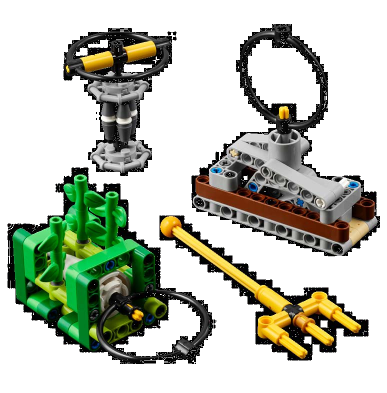

הציבו מבני אלמוגים חדשים שיגדלו במשתלה עד שיהיו
חזקים מספיק להעברה לשונית.
כריש
הכריש סומן זה עתה למטרות מחקר - שחררו אותו בחזרה
לבית הגידול שלו.
שונית אלמוגים
הציבו בזהירות את מבנה האלמוגים החדש מבלי לפגוע בקטעי
שונית סמוכים אחרים.
צוללן
עזרו לצוללן להעביר אלמוג חדש ממשתלת האלמוגים לשונית
האלמוגים.
דג חכה
הובילו את דג החכה חזרה לבית המפתיע שלו בתוך הספינה
הטרופה.
הרימו תורן
הרימו את התורן כדי לשקם את הספינה הטרופה שטבעה
ולחקור את מה שנמצא בתוכה.
אוצרו של הקראקן
חלצו את תיבת האוצר מתוך הספינה הטרופה כדי לחשוף את
ההיסטוריה שלה ואת האוצר הטמון בתוכה.
בית גידול מלאכותי
סדרו מחדש את מקטעי בית הגידול המלאכותי כדי ליצור
בתים בטוחים עבור הסרטנים ועבור יצורים ימיים אחרים
החיים באזור.
UNEXPECTED ENCOUNTER
An unknown creature has attached itself to the AUV!
Safely release it and deliver it to the cold seep.
SEND OVER THE SUBMERSIBLE
Some waters are too difficult to reach with larger ships.
Send the submersible to explore the opposing field’s
waters.
SONAR DISCOVERY
Use the ship’s sonar technology to scan the
surroundings for nearby objects or animals.
FEED THE WHALE
Krill are a whale’s favorite food! Collect the krill and
feed them to the hungry whale.
CHANGE SHIPPING LANES
Adjust the cargo ship’s route to safely avoid whale
migration routes by moving to another shipping lane.
SAMPLE COLLECTION
Collect samples and artifacts from around the mat so
they can be analyzed by scientists in the lab.

RESEARCH VESSEL
Securely dock the ship that contains the samples and
artifacts your team has collected.
PRECISION TOKENS
You begin the match with six
precision tokens worth 50 points.
If you interrupt the robot outside
of home, the referee will
remove one token. You earn
points for the number of
tokens remaining at the end
of the match.